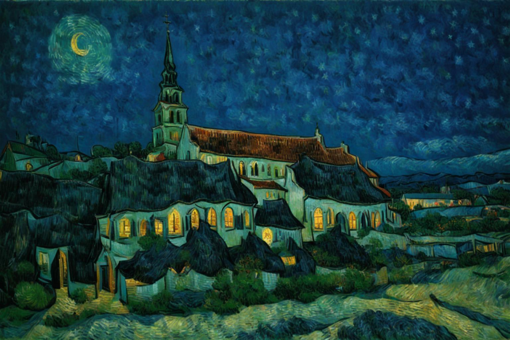

Van Gogh style starry night
Van Gogh style starry night
Van Gogh style starry night

Style transfer and image editing are two significant fields in computer vision. This paper proposes StyleWallfacer, a universal framework that unifies style transfer and image editing tasks. Current style transfer methods often face challenges such as the difficulty in maintaining the original content structure while transferring style, and image editing techniques may lack precision and flexibility in controlling the style and content of images. StyleWallfacer addresses these issues by introducing a novel architecture that combines the strengths of both fields. The framework effectively balances the trade-off between style and content, achieving high-quality style transfer results while enabling precise image editing. Extensive experiments demonstrate that StyleWallfacer outperforms existing methods in terms of visual quality, style transfer accuracy, and content preservation. It provides a more flexible and powerful tool for various applications such as artistic image generation, photo enhancement, and personalized content creation.
@misc{Gary2025StyleWallfacer,
title={StyleWallfacer: A Universal Framework for Style Transfer and Image Edit},
author={Gary Song yan},
year={2025},
eprint={2505.10316},
archivePrefix={arXiv},
primaryClass={cs.CV},
url={https://arxiv.org/abs/2505.10316},
}